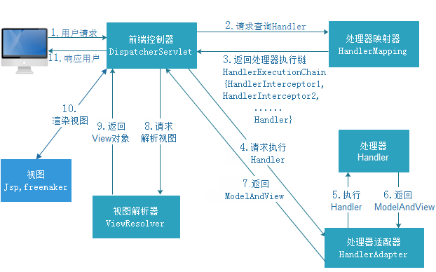

答：1）用于创建bean对象,管理bean对象的那个容器。
2）Spring IOC 容器本质上指的的就是Spring Bean容器,Spring Bean容器中最核心一个机制是IOC机制(控制反转),
所以有时候又将springbean容器称之为Spring IOC 容器.
答：IOC 是Spring中提供一种控制反转机制,目的是将我们项目中对象的依赖管理交给Spring实现,
这样可以更好实现对象关系的解耦,提高程序的可扩展性.
答：DI 是Spring中的依赖注入机制,IOC的实现需要借助这种机制.我们通常会这样理解,
Spring Bean容器中的IOC思想一种目标,DI是实现这种思想的目标的手段.
答：@Scope(“singleton”)
@Scope(“prototype”)
@Lazy(value=true)
答：借助反射机制，防止内存泄漏，对象已经不使用了但占用着内存,这种现 象称之为内存泄漏,内存泄漏不是内存溢出,但是它是内存溢出的一个导火索. 内存溢出直接就导致系统崩溃了.
答：
1、客户端发出一个http请求给web服务器，web服务器对http请求进 行 解析，如果匹配前端控制器(或分发器/DispatcherServlet)的请求映射路径， web容器将请求转交给DispatcherServlet.
2、DipatcherServlet接收到这个请求之后将根据请求的信息以及处理器映射 器(HandlerMapping)的配置找到处理请求的处理器（Handler）。
3、由具体的处理器适配器（HandlerAdapter）对Handler进行具体的调用。
4、Handler对数据处理完成以后将返回一个ModelAndView()对象给 DispatcherServlet。
5、DispatcherSevlet通过视图解析器（ViewResolver）将ModelAndView()转 化为真正的视图View。
6、Dispatcher通过model解析出ModelAndView()中的参数进行解析最终展 现出完整的view并返回给客户端。
答：优点在于：
1：能够实现全局事务的控制，通过EJB CMT进行事物的管理。
2：能够保证项目模块在系统中完成的功能是可可控制的的操作（AOP）
缺点在于：
1：Spring中的事物声明有编程式事物和申明是事物
相同点：都是通过get来获取值的
不同点：$传进去的字符串不带引号 #号带引号
答：有时候，固定的sql语句不能够满足我们的应用需求。这个时候需要在 标准的基础上建立动态的查询语句。
Mybatis提供了多种注解，可以提供动态查询语言。
比如说在开发的时候，遇到这样的场景，界面提供了多种查询，但是都是非 必填写，在选择查询条件时可以选中任意几种组合作为查询条件，如果在使 用jdbc的时候，需要判断参数为空，自己组装sql，
但是mybatis提供动态sql机制，依靠标签。
答：Shiro权限控制流程的原理：
应用代码 —- 调用Subject （shiro的Subject 就代表当前登陆用户） 控制权限 —- Subject 在shiro框架内部 调用 Shiro SecurityManager 安全管理器 —– 安全管理器调用 Realm （程序和安全数据连接器 ）。
Subject要进行任何操作，都必须要调用安全管理器（对我们来说是自动的）。
而安全管理器会调用指定的Realms对象，来连接安全数据。
Realms用来编写安全代码逻辑和访问安全数据，是连接程序和安全数据的桥梁。
BeanFactory 可以理解为含有bean集合的工厂类。BeanFactory 包含了种bean的定义，以便在接收到客户端请求时将对应的bean实例化。
BeanFactory还能在实例化对象时生成协作类之间的关系。此举将bean自身与bean客户端的配置中解放出来。BeanFactory还包含了bean生命周期的控制，调用客户端的初始化方法（initialization methods）和销毁方法（destruction methods）。
从表面上看，application context如同bean factory一样具有bean定义、bean关联关系的设置，根据请求分发bean的功能。但application context在此基础上还提供了其他的功能。
Spring Bean的生命周期简单易懂。在一个bean实例被初始化时，需要执行一系列的初始化操作以达到可用的状态。同样，当一个bean不在被调用时需要进行相关的析构操作，并从bean容器中移除。
Spring bean factory 负责管理在spring容器中被创建的bean的生命周期。Bean的生命周期由两组回调（call back）方法组成。
初始化之后调用的回调方法。
销毁之前调用的回调方法。
Spring框架提供了以下四种方式来管理bean的生命周期事件：
1）InitializingBean和DisposableBean回调接口
2）针对特殊行为的其他Aware接口
3）Bean配置文件中的Custom init()方法和destroy()方法
4）@PostConstruct和@PreDestroy注解方式
使用customInit()和 customDestroy()方法管理bean生命周期的代码样例如下：
<beans>
<bean id="demoBean" class="com.howtodoinjava.task.DemoBean"
init-method="customInit" destroy-method="customDestroy"></bean>
</beans>Spring容器中的bean可以分为5个范围。所有范围的名称都是自说明的，但是为了避免混淆，还是让我们来解释一下：
1）singleton：这种bean范围是默认的，这种范围确保不管接受到多少个请求，每个容器中只有一个bean的实例，单例的模式由bean factory自身来维护。
2）prototype：原形范围与单例范围相反，为每一个bean请求提供一个实例。
3）request：在请求bean范围内会每一个来自客户端的网络请求创建一个实例，在请求完成以后，bean会失效并被垃圾回收器回收。
4）Session：与请求范围类似，确保每个session中有一个bean的实例，在session过期后，bean会随之失效。
5）global-session：global-session和Portlet应用相关。当你的应用部署在Portlet容器中工作时，它包含很多portlet。如果你想要声明让所有的portlet共用全局的存储变量的话，那么这全局变量需要存储在global-session中。
全局作用域与Servlet中的session作用域效果相同。
关注点是应用中一个模块的行为，一个关注点可能会被定义成一个我们想实现的一个功能。
横切关注点是一个关注点，此关注点是整个应用都会使用的功能，并影响整个应用，比如日志，安全和数据传输，几乎应用的每个模块都需要的功能。因此这些都属于横切关注点。
Spring框架中使用到了大量的设计模式，下面列举了比较有代表性的：
Spring 多线程请求过来调用的Controller对象都是一个，而不是一个请求过来就创建一个Controller对象。
并发的安全？ 原因就在于Controller对象是单例的，那么如果不小心在类中定义了类变量，那么这个类变量是被所有请求共享的，这可能会造成多个请求修改该变量的值，出现与预期结果不符合的异常
那有没有办法让Controller不以单例而以每次请求都重新创建的形式存在呢？
答案是当然可以，只需要在类上添加注解@Scope(“prototype”)即可，这样每次请求调用的类都是重新生成的（每次生成会影响效率）
虽然这样可以解决问题，但增加了时间成本，总让人不爽，还有其他方法么？答案是肯定的！
使用ThreadLocal来保存类变量，将类变量保存在线程的变量域中，让不同的请求隔离开来。
轻量：Spring 是轻量的，基本的版本大约2MB。
控制反转：Spring通过控制反转实现了松散耦合，对象们给出它们的依赖，而不是创建或查找依赖的对象们。
面向切面的编程(AOP)：Spring支持面向切面的编程，并且把应用业务逻辑和系统服务分开。
容器：Spring 包含并管理应用中对象的生命周期和配置。
MVC框架：Spring的WEB框架是个精心设计的框架，是Web框架的一个很好的替代品。
事务管理：Spring 提供一个持续的事务管理接口，可以扩展到上至本地事务下至全局事务（JTA）。
异常处理：Spring 提供方便的API把具体技术相关的异常（比如由JDBC，Hibernate or JDO抛出的）转化为一致的unchecked 异常。
Spring提供以下几种集合的配置元素：
Spring支持如下两种方式的事务管理：
编程式事务管理：这意味着你可以通过编程的方式管理事务，这种方式带来了很大的灵活性，但很难维护。
声明式事务管理：这种方式意味着你可以将事务管理和业务代码分离。你只需要通过注解或者XML配置管理事务。
1)它为不同的事务API(如JTA, JDBC, Hibernate, JPA, 和JDO)提供了统一的编程模型。
2)它为编程式事务管理提供了一个简单的API而非一系列复杂的事务API(如JTA).
3)它支持声明式事务管理。
4)它可以和Spring 的多种数据访问技术很好的融合。
（1）前端控制器 DispatcherServlet（不需要程序员开发）
作用：接收请求、响应结果，相当于转发器，有了DispatcherServlet 就减少了其它组件之间的耦合度。
（2）处理器映射器HandlerMapping（不需要程序员开发）
作用：根据请求的URL来查找Handler
（3）处理器适配器HandlerAdapter
注意：在编写Handler的时候要按照HandlerAdapter要求的规则去编写，这样适配器HandlerAdapter才可以正确的去执行Handler。
（4）处理器Handler（需要程序员开发）
（5）视图解析器 ViewResolver（不需要程序员开发）
作用：进行视图的解析，根据视图逻辑名解析成真正的视图（view）
（6）视图View（需要程序员开发jsp）
View是一个接口， 它的实现类支持不同的视图类型（jsp，freemarker，pdf等等）
通过Jackson框架就可以把Java里面的对象直接转化成Js可以识别的Json对象。具体步骤如下 ：
（1）加入Jackson.jar
（2）在配置文件中配置json的映射
（3）在接受Ajax方法里面可以直接返回Object,List等,但方法前面要加上
1. #{}是预编译处理，${}是字符串替换。
2. Mybatis在处理#{}时，会将sql中的#{}替换为?号，调用PreparedStatement的set方法来赋值；
3. Mybatis在处理${}时，就是把${}替换成变量的值，相当于字符串拼接
4. 使用#{}可以有效的防止SQL注入，提高系统安全性。
一级缓存
默认开启
SqlSession级别的缓存，实现在同一个会话中数据的共享
一级缓存的生命周期和SqlSession一致
当有多个SqlSession或者分布式环境下，数据库写操作会引起脏数据。
二级缓存
默认不开启，需手动开启
SqlSessionFactory级别的缓存，实现不同会话中数据的共享，是一个全局变量
可自定义存储源，如Ehcache
当开启缓存后，数据查询的执行的流程是：二级缓存>一级缓存>数据库
不同于一级缓存，二级缓存可设置是否允许刷新和刷新频率实现
实体类实现序列化，在mapper文件中开启<c
ache>
在配置文件中设置cacheEnabled为true
Springmvc的入口是一个servlet即前端控制器，而struts2入口是一个filter过虑器。
Springmvc是基于方法开发，传递参数是通过方法形参，可以设计为单例或多例(建议单例)，struts2是基于类开发，传递参数是通过类的属性，只能设计为多例。
先来看一下MyBatis 的编程式使用的方法：
public void testMapper() throws IOException {
String resource = "mybatis-config.xml";
InputStream inputStream = Resources.getResourceAsStream(resource);
SqlSessionFactory sqlSessionFactory = new SqlSessionFactoryBuilder().build(inputStream);
SqlSession session = sqlSessionFactory.openSession();
try {
BlogMapper mapper = session.getMapper(BlogMapper.class);
Blog blog = mapper.selectBlogById(1);
System.out.println(blog);
} finally {
session.close();
}
}1.读取配置文件，配置文件包含数据库连接信息和Mapper映射文件或者Mapper包路径。
2.有了这些信息就能创建SqlSessionFactory，SqlSessionFactory的生命周期是程序级,程序运行的时候建立起来,程序结束的时候消亡
3.SqlSessionFactory建立SqlSession,目的执行sql语句，SqlSession是过程级,一个方法中建立,方法结束应该关闭
4.当用户使用mapper.xml文件中配置的的方法时，mybatis首先会解析sql动态标签为对应数据库sql语句的形式，并将其封装进MapperStatement对象，然后通过executor将sql注入数据库执行，并返回结果。
5.将返回的结果通过映射，包装成java对象。
接口映射就是在IBatis中任意定义接口,然后把接口里面的方法和SQL语句绑定,我们通过直接调用接口方法 例如：
UserMapper userMapper=sqlSession.getMapper (UserMapper.class) 就可以,这样比起原来了SqlSession提供的方法,
例如List<Country> countryList = sqlSession.selectList("selectAll");我们可以有更加灵活的选择和设置.。
注意：（1）Mapper .xml文件的namespace属性必须配置为接口的全限定名称，接口方法名与Mapper.xml中的<select><insert>id值必须相同，且接口方法的返回值类型必须与Mapper.xml配置的resultType一致，这里后者起到决定作用。
（2）select查询通过在Mapper.xml中配置ResultMap标签，将查询结果的列名与字段名对应。
insert语句通过#{属性名}从接口参数获取值放到sql语句中。
（3）Mapper.xml接口绑定本质是动态代理。
1)创建SqlSessionFactory
2)通过SqlSessionFactory创建SqlSession
3)通过SqlSession执行数据库操作
4)调用session.commit()提交事务
5)调用session.close()关闭事务
JDBC编程的不足之处
1)数据库链接创建、释放频繁造成系统资源浪费从而影响系统性能，如果使用数据库链接池可解决此问题。
2)Sql语句写在代码中造成代码不易维护，实际应用sql变化的可能较大，sql变动需要改变java代码。
3)向sql语句传参数麻烦，因为sql语句的where条件不一定，可能多也可能少，占位符需要和参数一一对应。
4)对结果集解析麻烦，sql变化导致解析代码变化，且解析前需要遍历，如果能将数据库记录封装成pojo对象解析比较方便。
MyBatis的解决方案
1)在SqlMapConfig.xml中配置数据链接池，使用连接池管理数据库链接。
2)将Sql语句配置在XXXXmapper.xml文件中与java代码分离。
3)Mybatis自动将java对象映射至sql语句。
4)Mybatis自动将sql执行结果映射至java对象。
优点
1)易于上手和掌握
2)Sql写在xml里面，便于统一管理和优化
3)减少Sql与程序代码的耦合
4)提供xml标签，支持动态Sql编写
缺点
1)Sql工作量大，尤其是字段多，关联表多时，更是如此
2)Sql依赖于数据库，导致数据库移植性差
3)由于xml里面标签id必须唯一，导致DAO中方法不支持方法重载。所以dao层必须是接口
Mapper接口方法名和mapper.xml中定义的每个sql的id相同
Mapper接口方法的输入参数类型和mapper.xml中定义的每个sql 的parameterType的类型相同
Mapper接口方法的输出参数类型和mapper.xml中定义的每个sql的resultType的类型相同
Mapper.xml文件中的namespace即是mapper接口的类路径
1. 是一个基于MVC的web框架
2. SpringMVC是Spring的一个模块，是Spring的子容器，子容器可以拿父容器的东西，但是父容器不能拿子容器的东西
3. SpringMVC的前端控制器DispatcherServlet，用于分发请求，使开发变得简单
4. SpringMVC流程（重点）. SpringMVC三大组件
1）HandlerMapping：处理器映射器
用户请求路径到Controller方法的映射
2）HandlerAdapter：处理器适配器
根据handler(controlelr类）的开发方式（注解开发/其他开发） 方式的不同去寻找不同的处理器适配器
3）ViewResolver：视图解析器
可以解析JSP/freemarkerr/pdf等
答：1）Mybatis仅可以编写针对ParameterHandler、ResultSetHandler、StatementHandler、Executor这4种接口的插件，Mybatis通过动态代理，为需要拦截的接口生成代理对象以实现接口方法拦截功能，每当执行这4种接口对象的方法时，就会进入拦截方法，具体就是InvocationHandler的invoke()方法，当然，只会拦截那些你指定需要拦截的方法。
2）实现Mybatis的Interceptor接口并复写intercept()方法，然后在给插件编写注解，指定要拦截哪一个接口的哪些方法即可，记住，别忘了在配置文件中配置你编写的插件。
答：1）Mybatis动态sql可以让我们在Xml映射文件内，以标签的形式编写动态sql，完成逻辑判断和动态拼接sql的功能。2）Mybatis提供了9种动态sql标签：trim|where|set|foreach|if|choose|when|otherwise|bind。
3）其执行原理为，使用OGNL从sql参数对象中计算表达式的值，根据表达式的值动态拼接sql，以此来完成动态sql的功能。
答：1）Mybatis仅支持association关联对象和collection关联集合对象的延迟加载，association指的就是一对一，collection指的就是一对多查询。在Mybatis配置文件中，可以配置是否启用延迟加载lazyLoadingEnabled=true|false。
2）它的原理是，使用CGLIB创建目标对象的代理对象，当调用目标方法时，进入拦截器方法，比如调用a.getB().getName()，拦截器invoke()方法发现a.getB()是null值，那么就会单独发送事先保存好的查询关联B对象的sql，把B查询上来，然后调用a.setB(b)，于是a的对象b属性就有值了，接着完成a.getB().getName()方法的调用。这就是延迟加载的基本原理。
答：能，Mybatis不仅可以执行一对一、一对多的关联查询，还可以执行多对一，多对多的关联查询，多对一查询，其实就是一对一查询，只需要把selectOne()修改为selectList()即可；多对多查询，其实就是一对多查询，只需要把selectOne()修改为selectList()即可。
关联对象查询，有两种实现方式，一种是单独发送一个sql去查询关联对象，赋给主对象，然后返回主对象。另一种是使用嵌套查询，嵌套查询的含义为使用join查询，一部分列是A对象的属性值，另外一部分列是关联对象B的属性值，好处是只发一个sql查询，就可以把主对象和其关联对象查出来。
答：第一种是使用<resultMap>标签，逐一定义列名和对象属性名之间的映射关系。
第二种是使用sql列的别名功能，将列别名书写为对象属性名，比如T_NAME AS NAME，对象属性名一般是name，小写，但是列名不区分大小写，Mybatis会忽略列名大小写，智能找到与之对应对象属性名，你甚至可以写成T_NAME AS NaMe，Mybatis一样可以正常工作。
答：虽然Mybatis解析Xml映射文件是按照顺序解析的，但是，被引用的B标签依然可以定义在任何地方，Mybatis都可以正确识别。原理是，Mybatis解析A标签，发现A标签引用了B标签，但是B标签尚未解析到，尚不存在，此时，Mybatis会将A标签标记为未解析状态，然后继续解析余下的标签，包含B标签，待所有标签解析完毕，Mybatis会重新解析那些被标记为未解析的标签，此时再解析A标签时，B标签已经存在，A标签也就可以正常解析完成了。
答：MyBatis里面的动态Sql一般是通过if节点来实现，通过OGNL语法来实现，但是如果要写的完整，必须配合where、trim节点，where节点是判断包含节点有内容就插入where，否则不插入，trim节点是用来判断如果动态语句是以and 或or开始，那么会自动把这个and或者or取掉 。
SimpleExecutor：每执行一次update或select，就开启一个Statement对象，用完立刻关闭Statement对象。
ReuseExecutor：执行update或select，以sql作为key查找Statement对象，存在就使用，不存在就创建，用完后，不关闭Statement对象，而是放置于Map<String, Statement>内，供下一次使用。简言之，就是重复使用Statement对象。
BatchExecutor：执行update（没有select，JDBC批处理不支持select），将所有sql都添加到批处理中（addBatch()），等待统一执行（executeBatch()），它缓存了多个Statement对象，每个Statement对象都是addBatch()完毕后，等待逐一执行executeBatch()批处理。与JDBC批处理相同。
作用范围：Executor的这些特点，都严格限制在SqlSession生命周期范围内。
答：Hibernate属于全自动ORM映射工具，使用Hibernate查询关联对象或者关联集合对象时，可以根据对象关系模型直接获取，所以它是全自动的。而Mybatis在查询关联对象或关联集合对象时，需要手动编写sql来完成，所以，称之为半自动ORM映射工具。
面试题看似都很简单，但是想要能正确回答上来，必定是研究过源码且深入的人，而不是仅会使用的人或者用的很熟的人，以上所有面试题及其答案所涉及的内容，在我的Mybatis系列博客中都有详细讲解和原理分析。
1. mybatis配置
2. SqlMapConfig.xml，此文件作为mybatis的全局配置文件，配置了mybatis的运行环境等信息。
3. mapper.xml文件即sql映射文件，文件中配置了操作数据库的sql语句。此文件需要在SqlMapConfig.xml中加载。
4. 通过mybatis环境等配置信息构造SqlSessionFactory即会话工厂
5. 由会话工厂创建sqlSession即会话，操作数据库需要通过sqlSession进行。
6. mybatis底层自定义了Executor执行器接口操作数据库，Executor接口有两个实现，一个是基本执行器、一个是缓存执行器。
7. Mapped Statement也是mybatis一个底层封装对象，它包装了mybatis配置信息及sql映射信息等。mapper.xml文件中一个sql对应一个Mapped Statement对象，sql的id即是Mapped statement的id。
8. Mapped Statement对sql执行输入参数进行定义，包括HashMap、基本类型、pojo，Executor通过Mapped Statement在执行sql前将输入的java对象映射至sql中，输入参数映射就是jdbc编程中对preparedStatement设置参数。
9. Mapped Statement对sql执行输出结果进行定义，包括HashMap、基本类型、pojo，Executor通过Mapped Statement在执行sql后将输出结果映射至java对象中，输出结果映射过程相当于jdbc编程中对结果的解析处理过程。
事务就是对一系列的数据库操作（比如插入多条数据）进行统一的提交或回滚操作，如果插入成功，那么一起成功，如果中间有一条出现异常，那么回滚之前的所有操作。这样可以防止出现脏数据，防止数据库数据出现问题。
开发中为了避免这种情况一般都会进行事务管理。Spring中也有自己的事务管理机制，一般是使用TransactionMananger进行管 理，可以通过Spring的注入来完成此功能。
Spring支持如下两种方式的事务管理：
编程式事务管理：这意味着你可以通过编程的方式管理事务，这种方式带来了很大的灵活性，但很难维护。
声明式事务管理：这种方式意味着你可以将事务管理和业务代码分离。你只需要通过注解或者XML配置管理事务。
一般选择声明式事务管理，因为这种方式和应用程序的关联较少。
1. Mybatis和hibernate不同，它不完全是一个ORM框架，因为MyBatis需要程序员自己编写Sql语句，不过mybatis可以通过XML或注解方式灵活配置要运行的sql语句，并将java对象和sql语句映射生成最终执行的sql，最后将sql执行的结果再映射生成java对象。
2. Mybatis学习门槛低，简单易学，程序员直接编写原生态sql，可严格控制sql执行性能，灵活度高，非常适合对关系数据模型要求不高的软件开发，例如互联网软件、企业运营类软件等，因为这类软件需求变化频繁，一但需求变化要求成果输出迅速。但是灵活的前提是mybatis无法做到数据库无关性，如果需要实现支持多种数据库的软件则需要自定义多套sql映射文件，工作量大。
3. Hibernate对象/关系映射能力强，数据库无关性好，对于关系模型要求高的软件（例如需求固定的定制化软件）如果用hibernate开发可以节省很多代码，提高效率。但是Hibernate的学习门槛高，要精通门槛更高，而且怎么设计O/R映射，在性能和对象模型之间如何权衡，以及怎样用好Hibernate需要具有很强的经验和能力才行。
4. 总之，按照用户的需求在有限的资源环境下只要能做出维护性、扩展性良好的软件架构都是好架构，所以框架只有适合才是最好。
1)用户发送请求至前端控制器DispatcherServlet
2)DispatcherServlet收到请求调用HandlerMapping处理器映射器。
3)处理器映射器根据请求url找到具体的处理器，生成处理器对象及处理器拦截器(如果有则生成)一并返回给DispatcherServlet。
4)DispatcherServlet通过HandlerAdapter处理器适配器调用处理器
5)执行处理器(Controller，也叫后端控制器)。
6)Controller执行完成返回ModelAndView
7)HandlerAdapter将controller执行结果ModelAndView返回给DispatcherServlet
8)DispatcherServlet将ModelAndView传给ViewReslover视图解析器
9)ViewReslover解析后返回具体View
10)DispatcherServlet对View进行渲染视图（即将模型数据填充至视图中）。
11)DispatcherServlet响应用户
springmvc的入口是一个servlet即前端控制器，而struts2入口是一个filter过虑器。
springmvc是基于方法开发(一个url对应一个方法)，请求参数传递到方法的形参，可以设计为单例或多例(建议单例)，struts2是基于类开发，传递参数是通过类的属性，只能设计为多例。
Struts采用值栈存储请求和响应的数据，通过OGNL存取数据， springmvc通过参数解析器是将request请求内容解析，并给方法形参赋值，将数据和视图封装成ModelAndView对象，最后又将ModelAndView中的模型数据通过reques域传输到页面。Jsp视图解析器默认使用jstl。
答案1
系统启动的时候根据配置文件创建spring的容器,首先是发送http请求到核心控制器DispatcherServlet，spring容器通过映射器去寻找业务控制器，使用适配器找到相应的业务类，在进业务类时进行数据封装，在封装前可能会涉及到类型转换，执行完业务类后使用ModelAndView进行视图转发，数据放在model中，用map传递数据进行页面显示。
答案2

Application contexts提供一种方法处理文本消息，一个通常的做法是加载文件资源（比如镜像），它们可以向注册为监听器的bean发布事件。另外，在容器或容器内的对象上执行的那些不得不由bean工厂以程序化方式处理的操作，可以在Application contexts中以声明的方式处理。Application contexts实现了MessageSource接口，该接口的实现以可插拔的方式提供获取本地化消息的方法。
Spring框架支持以下五种bean的作用域：
singleton : bean在每个Spring ioc 容器中只有一个实例。
prototype：一个bean的定义可以有多个实例。
request：每次http请求都会创建一个bean，该作用域仅在基于web的Spring ApplicationContext情形下有效。
session：在一个HTTP Session中，一个bean定义对应一个实例。该作用域仅在基于web的Spring ApplicationContext情形下有效。
global-session：在一个全局的HTTP Session中，一个bean定义对应一个实例。该作用域仅在基于web的Spring ApplicationContext情形下有效。
缺省的Spring bean 的作用域是Singleton。
Spring 容器能够自动装配相互合作的bean，这意味着容器不需要<constructor-arg>和<property>配置，能通过Bean工厂自动处理bean之间的协作。
基于Java的配置，允许你在少量的Java注解的帮助下，进行你的大部分Spring配置而非通过XML文件。
以@Configuration 注解为例，它用来标记类可以当做一个bean的定义，被Spring IOC容器使用。另一个例子是@Bean注解，它表示此方法将要返回一个对象，作为一个bean注册进Spring应用上下文。
在Spring中有两种方式访问Hibernate：
控制反转 Hibernate Template和 Callback。
继承 HibernateDAOSupport提供一个AOP 拦截器。
用Spring的 SessionFactory 调用 LocalSessionFactory。集成过程分三步：
配置the Hibernate SessionFactory。
继承HibernateDaoSupport实现一个DAO。
在AOP支持的事务中装配。
它为不同的事务API 如 JTA，JDBC，Hibernate，JPA 和JDO，提供一个不变的编程模式。
它为编程式事务管理提供了一套简单的API而不是一些复杂的事务API如
它支持声明式事务管理。
它和Spring各种数据访问抽象层很好得集成。
关注点是应用中一个模块的行为，一个关注点可能会被定义成一个我们想实现的一个功能。
横切关注点是一个关注点，此关注点是整个应用都会使用的功能，并影响整个应用，比如日志，安全和数据传输，几乎应用的每个模块都需要的功能。因此这些都属于横切关注点。
AOP:面向切面编程:将一个系统中共同的业务逻辑提取出来,进行单独的封装成一个组件(切面),然后以配置的方式作用于系统中,实现程序的可插拔性,提高代码的复用性,提升系统的灵活性和性能
底层实现:JDK动态代理,只支持接口注入CGLIB:可以支持普通类的注入
那些地方会用到:事物开启,日志记录,安全验证,权限验证
切面:系统中共通的业务提取出来,在某个时刻或者某个阶段共同调用
切入点:找到目标方法,给它追加共通的业务逻辑,在spring中提供了切入点表达式帮助我们找到目标方法execution
通知:什么时候调用这个共通的业务逻辑,用于指定切面方法作用到系统中的时机.前置通知,后置通知,环绕通知,异常通知,最终通知。
AutoWried:按照类型进行匹配—spring框架自带的,查看当前Spring容器中那个bean类型和引用类型一致,就进行注入,如果有多个匹配类型就会报错.
Resource:默认按照名称进行注入,如果找不到对应的名称按照bean类型进行注入 。
答：MyBatis里面的动态Sql一般是通过if节点来实现，通过OGNL语法来实现，但是如果要写的完整，必须配合where、trim节点，where节点是判断包含节点有内容就插入where，否则不插入，trim节点是用来判断如果动态语句是以and 或or开始，那么会自动把这个and或者or取掉 。
ending...